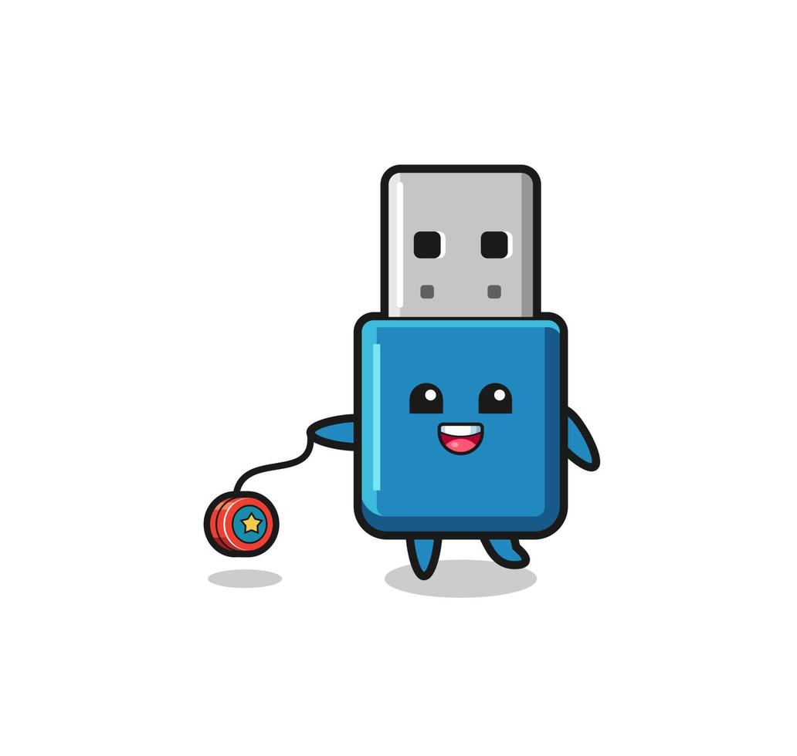
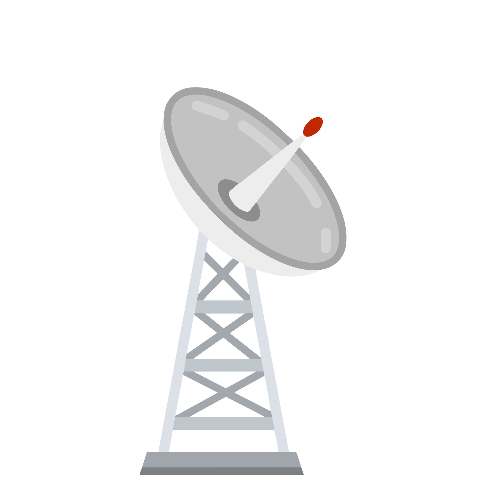

In de fysiekelaag van een computer bevinden zich hardwarecomponenten die verantwoordelijk zijn voor het ontvangen en verzenden van fysieke signalen om gegevens door een computer te trasnsporteren. Deze laag bevat verschillende componenten en verbindingen die helpen bij de fysieke overdracht:
- Kabels en Verbindingen: Dit zijn alle kabels, connectoren en aansluitingen waarmee gegevens
worden overgedragen tussen verschillende hardwarecomponenten. Voorbeelden hiervan zijn USB-kabels
(voor het aansluiten van randaparatuur) en HDMI-kabels (voor video en audio uitvoer).

- Netwerkaparatuur: Dit zijn alle netwerkhardware zoals netwerkkaarten (NIC's), routers, switches en hubs die betrokken zijn bij de fysieke overdracht van gegevens in een computernetwerk.
- Fysieke mediatypes: Verschillende soorten fysieke media kunnen worden gebruikt om
gegevens over te dragen, zoals koperen kabels (bijvoorbeeld twisted pair-kabels),
glasvezelkabels en draadloze radiogolven voor draadloze communicatie.

-Elektronische componenten: In de fysieke laag zijn er elektronische componenten zoals transistors, diodes en IC's (Integrated Circuits) die signalen versterken, moduleren en demoduleren om gegevens te verzenden en te ontvangen.
-Fysieke topologie: De fysieke topologie van een netwerk beschrijft de fysieke indeling en verbinding van apparaten in een netwerk. Voorbeelden van fysieke topologieën zijn ster-topologie, bus-topologie en ring-topologie.